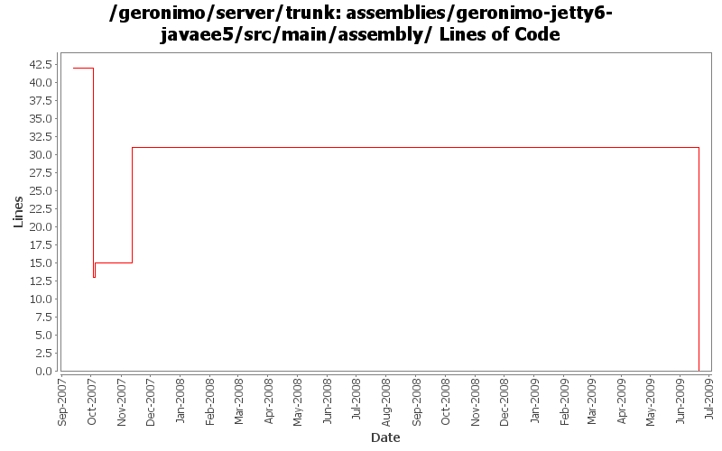

[root]/assemblies/geronimo-jetty6-javaee5/src/main/assembly

| Author | Changes | Lines of Code | Lines per Change |
|---|---|---|---|
| Totals | 6 (100.0%) | 31 (100.0%) | 5.1 |
| gdamour | 1 (16.7%) | 16 (51.6%) | 16.0 |
| djencks | 1 (16.7%) | 13 (41.9%) | 13.0 |
| gawor | 1 (16.7%) | 2 (6.5%) | 2.0 |
| xuhaihong | 1 (16.7%) | 0 (0.0%) | 0.0 |
| jdillon | 2 (33.3%) | 0 (0.0%) | 0.0 |
GERONIMO-4697 Update those folders contained jetty6 to jetty
0 lines of code changed in 1 file:
Add support for:
* static configuration of cluster members: this is the purpose of the
o.a.g.c.config package. BasicClusterInfo is used to statically configure
a cluster. At this stage, only the name of the cluster can be defined.
BasicNodeInfo is used to statically configure a cluster member. This
configuration encompasses the name of a member along with the necessary
JMX connection info, abstracted by ExtendedJMXConnectorInfo, in order
to connect to it.
* clustered deployments of configuration: this is the purpose of the
o.a.g.c.deployment package. MasterConfigurationStore abstracts a clustered
repository: when a configuration is installed to it, it cascades to the
cluster members, statically configured, the installation of this
configuration. Also, it automcallically creates "master" configurations,
which are able to remote start or stop the configurations cascaded to
cluster members..
* clustered start/stop of configuration: also in o.a.g.c.deployment.
ClusterConfigurationController is a GBean, which knows how to remote
start or stop a given configuration on a given cluster member.
Following this commit, two new repositories will be listed for the
geronimo-jetty6-jee5 assembly: master-repository and cluster-repository.
master-repository is a repository where the "master" configurations will
be maintained along with a carbon-copy of the associated "raw" configurations.
cluster-repository is a repository, which is a target of the
MastConfigurationStore.
This fixes GERONIMO-3597 - Distribution and start/stop of clustered deployments
16 lines of code changed in 1 file:
let's not change line endings in jar files
2 lines of code changed in 1 file:
GERONIMO-3496 assemble servers out of plugins
13 lines of code changed in 1 file:
Fix up some more assembly issues for using gsh
0 lines of code changed in 2 files: